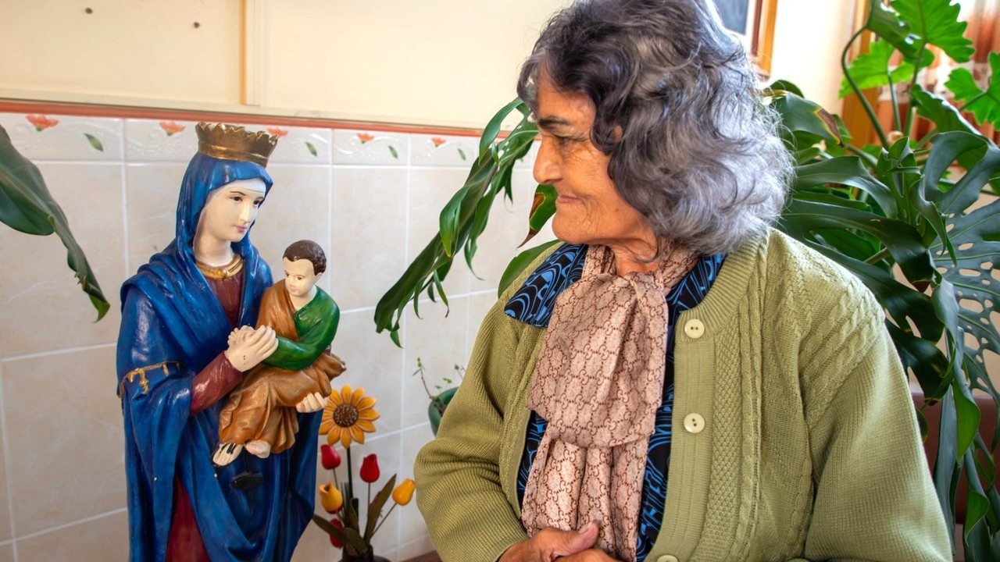

Reveló que rechazó una invitación para volver a participar en el Miss Perú. Milett Figueroa respaldó a Luciana Fuster tras su designación como nueva directora del Miss Grand Perú y cuestionó las críticas que recibió por asumir el cargo. Luciana Fuster es una gran miss que está preparada, así que le deseo lo mejor”, expresó.



Reveló que rechazó una invitación para volver a participar en el Miss Perú. Milett Figueroa respaldó a Luciana Fuster tras su designación como nueva directora del Miss Grand Perú y cuestionó las críticas que recibió por asumir el cargo. Luciana Fuster es una gran miss que está preparada, así que le deseo lo mejor”, expresó.
Tal como apunta la justicia italiana, los sistemas de Revolut habrían facilitado movimientos sospechosos por valor de 76,5 millones de euros. Cabe decir que la medida no constituye ninguna acusación penal sobre Revolut y se aplicará exclusivamente a las operaciones del neobanco en Italia.
Más de 10,000 pensionistas de la ONP recibirán su pensión desde el lunes 16, sin salir de casa. La ONP contribuye a que los pensionistas, especialmente aquellos con dificultades de movilidad, puedan recibir su pensión de forma oportuna, segura y sin salir de casa.
RAYE se dirige a la ceremonia de los premios Grammy 2027 como la artista con más nominaciones, obteniendo 11 la mañana del lunes (16 de noviembre). Olivia Dean, Bruno Mars y Leon Thomas obtuvieron seis nominaciones cada uno.
Todos los asistentes a la misa en la Base Aérea Las Palmas tienen la oportunidad de ver de cerca al papa León catorce durante el recorrido que realiza en el papamóvil.
El papa León catorce, ante las heridas de los indígenas de la Amazonía peruana. El Papa León catorce finaliza la tarde del lunes su primera gira sudamericana, iniciada el pasado 7 de noviembre en Montevideo.
El santo padre llegó anoche a la ciudad de Lima luego de cumplir una intensa agenda en las ciudades de Chiclayo, Cusco y Pucallpa.
León catorce le correspondió con un gesto desde su vehículo. Una novia nunca olvidará el emotivo momento que vivió durante la visita del papa León catorce a Chiclayo, en la región Lambayeque, tras acudir vestida de blanco hasta el puente Reque para esperar el paso del sumo pontífice, a pocas horas de celebrar su matrimonio.
El papa León catorce hizo un importante llamado a que en el Perú se extiendan las obras de buena voluntad en cuidado de los más necesitados. En uno de sus últimos discursos en su visita al Perú, pidió reconocer que el país tiene un gran número de pobres, ancianos y abandonados.
Cada edición dura menos de dos minutos. En la web tienes el resumen de cada historia y el enlace directo al medio original para leerla completa.
Conoce Olfatecho →